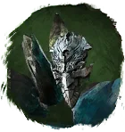
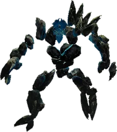
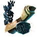

Открыть в интерактивной вики →

| Уровень | 65 |
|---|---|
| Прокачка | есть |
| Ранг в стае | 5 |
| Здоровье | 1900 |
| Мана | 1200 |
| Выносливость | 1300 |
| Статистика | Уровень: 65, ранг: 5, здоровье: 1900, мана: 1200, выносливость: 1300 |
Цена
500  Платина или
Платина или
Платина или 
Рецепт ТонаВыкуп


Где взять
Покупается у Азарии  Азария
Азария
АзарияДоп. бонус
Повышенный шанс на двойные атаки и попадание ментальными атаками.
Навыки


Скины
Доп. информация
Требуемый уровень: 65
Призыв: Требуется Рецепт Тона
Цена выкупа: 3 × Средняя Фляга Здоровья, 3 × Средняя Фляга Выносливости, 3 × Средняя Фляга Маны у Азарии в Деревне друидов.
Может получать опыт — ДА
Описание
 | Вода, заключённая одновременно в камень и дерево. Слитые существа, которые бьют по слабостям противника. Двойными атаками изматывают врага так успешно, что убийство становится пустяком. Атакует физически и ментально. Использует: Болезненный удар, Удар головой, Толстокожесть, Групповой контроль дыхания, Мощный удар, Рёв, Ледяной щит, Таран, Твоя старуха. | |